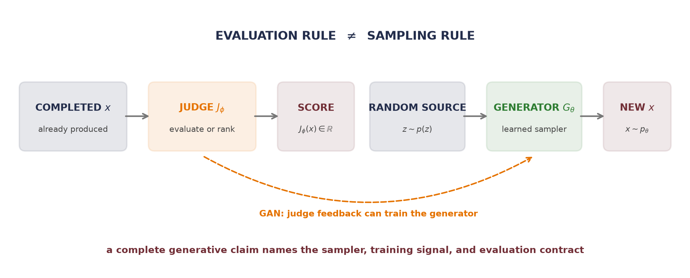
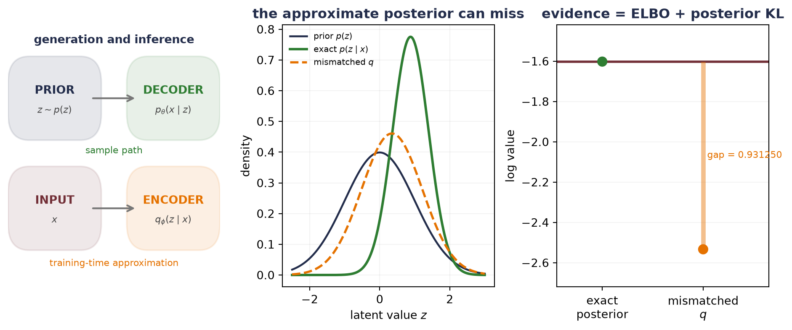
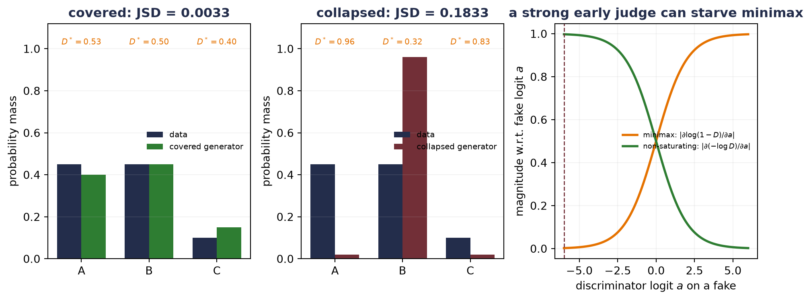
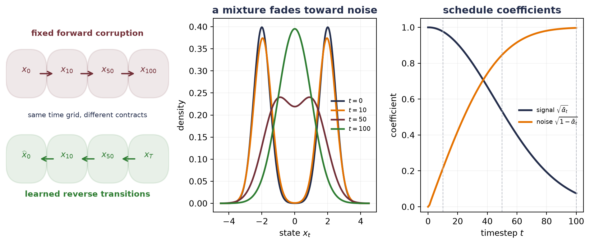
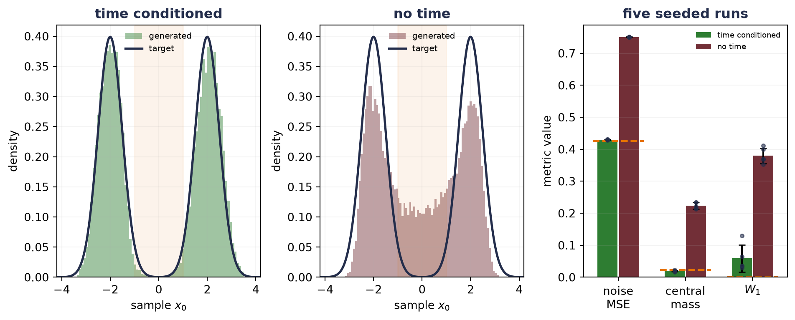

19 Generative Models: From Codes to Samples
WarningTrap: a judge is not a generator
A reward model can score a completed response, and a preference loss can move probability among compared responses. Both begin with a generator already in hand. Neither explains how a model first learns a distribution from which a new sample can be drawn.
The interlude before Part III made a different promise: a code is not yet a distribution. Reconstruction supplies encoded observations and a decoder, but no principled random start. This chapter harvests both promises by learning the missing sampling contract:
\[ \text{probabilistic latent variables} \;\longrightarrow\; \text{adversarial sampling} \;\longrightarrow\; \text{iterative denoising}. \]
Variational autoencoders (VAEs), generative adversarial networks (GANs), and diffusion models make different choices along that route. Each supplies a sampling rule, a training signal, and a characteristic way to fail. A high training score does not make those choices interchangeable.
The first answer is to put an explicit probability law around the code.
19.1 Put probability around the code
A variational autoencoder (VAE) begins by defining generation—not reconstruction. Let \(\vect{z}\in\mathbb{R}^{k}\) be a latent variable with a chosen prior, commonly
\[ p(\vect{z})=\mathcal{N}(\vect{0},\matr{I}_k). \]
A decoder with parameters \(\theta\) specifies a conditional distribution \(p_\theta(\vect{x}\mid\vect{z})\). Together they define the joint density
\[ p_\theta(\vect{x},\vect{z}) =p(\vect{z})p_\theta(\vect{x}\mid\vect{z}) \]
and the marginal model
\[ p_\theta(\vect{x}) =\int p(\vect{z})p_\theta(\vect{x}\mid\vect{z})\,d\vect{z}. \tag{19.1}\]
Generation is now a declared procedure—draw \(\vect{z}\sim p(\vect{z})\), then draw or decode \(\vect{x}\sim p_\theta(\vect{x}\mid\vect{z})\). The encoder is not used on this path—it belongs to inference and training.
Training is harder because the posterior \(p_\theta(\vect{z}\mid\vect{x})\) in Bayes’ rule contains the integral in Equation 19.1. A VAE introduces an approximate posterior, or inference model, whose parameters come from an encoder:
\[ q_\phi(\vect{z}\mid\vect{x}) =\mathcal{N}\!\left( \vect{\mu}_\phi(\vect{x}), \operatorname{diag}\vect{\sigma}_\phi^2(\vect{x}) \right). \tag{19.2}\]
The decoder \(p_\theta\) defines the generative model. The encoder \(q_\phi\) makes latent inference and training practical. Their arrows point in opposite directions—their probabilistic roles are not symmetric.
The ELBO is an exact gap identity
Why does this approximate posterior give us a trainable objective? Start from the log evidence and add a quantity that equals zero:
\[ \begin{aligned} \log p_\theta(\vect{x}) &=\E_{q_\phi(\vect{z}\mid\vect{x})} \left[ \log\frac{p_\theta(\vect{x},\vect{z})} {q_\phi(\vect{z}\mid\vect{x})} \right] \\ &\quad+ D_{\mathrm{KL}}\!\left( q_\phi(\vect{z}\mid\vect{x}) \,\|\, p_\theta(\vect{z}\mid\vect{x}) \right). \end{aligned} \tag{19.3}\]
The expectation in the first line expands into
\[ \mathcal{L}_{\mathrm{ELBO}}(\theta,\phi;\vect{x}) = \underbrace{ \E_{q_\phi(\vect{z}\mid\vect{x})} \left[\log p_\theta(\vect{x}\mid\vect{z})\right] }_{\text{expected reconstruction log likelihood}} - \underbrace{ D_{\mathrm{KL}}\!\left( q_\phi(\vect{z}\mid\vect{x})\,\|\,p(\vect{z}) \right) }_{\text{prior regularization}}. \tag{19.4}\]
KL divergence is nonnegative, so the evidence lower bound (ELBO) is no larger than \(\log p_\theta(\vect{x})\). More importantly, Equation 19.3 says exactly how loose it is—the gap is the KL divergence from the approximate posterior to the model’s true posterior. This is not merely a convenient inequality—it is an identity.
For the diagonal Gaussian in Equation 19.2 and a standard-normal prior, the regularizer is available coordinate by coordinate:
\[ D_{\mathrm{KL}}\!\left(q_\phi(\vect{z}\mid\vect{x})\,\|\,p(\vect{z})\right) =\frac{1}{2}\sum_{j=1}^{k} \left( \mu_{\phi,j}(\vect{x})^2 +\sigma_{\phi,j}(\vect{x})^2 -\log\sigma_{\phi,j}(\vect{x})^2 -1 \right). \tag{19.5}\]
This closed form is why an encoder commonly returns \(\vect{\mu}\) and \(\log\vect{\sigma}^2\): the KL does not need Monte Carlo estimation.
Let us pin every term in a case where the true posterior is available. Take
\[ z\sim\mathcal{N}(0,1), \qquad x\mid z\sim\mathcal{N}(z,0.36), \qquad x=1.2. \]
Gaussian conditioning gives
\[ p(z\mid x) =\mathcal{N}\!\left( \frac{x}{1+0.36},\frac{0.36}{1+0.36} \right) =\mathcal{N}(0.882353,0.264706). \]
The next audit compares the exact posterior with a deliberately mismatched \(q(z\mid x)=\mathcal{N}(0.35,0.75)\).
Identity test: verify the exact Gaussian ELBO gap
def gaussian_kl(
mean_q: float, variance_q: float, mean_p: float, variance_p: float
) -> float:
return 0.5 * (
math.log(variance_p / variance_q)
+ (variance_q + (mean_q - mean_p) ** 2) / variance_p
- 1.0
)
def gaussian_elbo(
x: float, likelihood_variance: float, mean_q: float, variance_q: float
) -> float:
expected_log_likelihood = -0.5 * (
math.log(2.0 * math.pi * likelihood_variance)
+ ((x - mean_q) ** 2 + variance_q) / likelihood_variance
)
return expected_log_likelihood - gaussian_kl(mean_q, variance_q, 0.0, 1.0)
x_observed = 1.2
likelihood_variance = 0.36
posterior_mean = x_observed / (1.0 + likelihood_variance)
posterior_variance = likelihood_variance / (1.0 + likelihood_variance)
log_evidence = -0.5 * (
math.log(2.0 * math.pi * (1.0 + likelihood_variance))
+ x_observed**2 / (1.0 + likelihood_variance)
)
exact_elbo = gaussian_elbo(
x_observed, likelihood_variance, posterior_mean, posterior_variance
)
mismatch_mean, mismatch_variance = 0.35, 0.75
mismatch_elbo = gaussian_elbo(
x_observed, likelihood_variance, mismatch_mean, mismatch_variance
)
posterior_gap = gaussian_kl(
mismatch_mean, mismatch_variance, posterior_mean, posterior_variance
)
fig, axes = plt.subplots(1, 3, figsize=(10, 4.2))
axes[0].axis("off")
axes[0].set_xlim(0, 1)
axes[0].set_ylim(0, 1)
contract_box(axes[0], 0.05, 0.61, 0.34, 0.22, "PRIOR", r"$z\sim p(z)$", navy)
contract_box(axes[0], 0.61, 0.61, 0.34, 0.22, "DECODER", r"$p_\theta(x\mid z)$", green)
contract_arrow(axes[0], (0.39, 0.72), (0.61, 0.72))
contract_box(axes[0], 0.05, 0.19, 0.34, 0.22, "INPUT", "$x$", wine)
contract_box(axes[0], 0.61, 0.19, 0.34, 0.22, "ENCODER", r"$q_\phi(z\mid x)$", orange)
contract_arrow(axes[0], (0.39, 0.30), (0.61, 0.30))
axes[0].text(0.50, 0.93, "generation and inference", ha="center", color=navy,
fontsize=10, weight="bold")
axes[0].text(0.50, 0.51, "sample path", ha="center", color=green, fontsize=8.2)
axes[0].text(0.50, 0.08, "training-time approximation", ha="center",
color=orange, fontsize=8.2)
z_grid = torch.linspace(-2.5, 3.0, 500)
def gaussian_density(grid: Tensor, mean: float, variance: float) -> Tensor:
return torch.exp(-(grid - mean).square() / (2.0 * variance)) / math.sqrt(
2.0 * math.pi * variance
)
axes[1].plot(z_grid, gaussian_density(z_grid, 0.0, 1.0), color=navy,
lw=1.7, label="prior $p(z)$")
axes[1].plot(z_grid, gaussian_density(z_grid, posterior_mean, posterior_variance),
color=green, lw=2.2, label=r"exact $p(z\mid x)$")
axes[1].plot(z_grid, gaussian_density(z_grid, mismatch_mean, mismatch_variance),
color=orange, lw=2.0, ls="--", label="mismatched $q$")
axes[1].set_xlabel("latent value $z$")
axes[1].set_ylabel("density")
axes[1].set_title("the approximate posterior can miss", color=navy, weight="bold")
axes[1].legend(frameon=False, fontsize=7.5)
axes[1].grid(alpha=0.15)
axes[2].axhline(log_evidence, color=wine, lw=2.1, label="log evidence")
axes[2].scatter([0, 1], [exact_elbo, mismatch_elbo], s=65,
color=[green, orange], zorder=3)
axes[2].vlines(1, mismatch_elbo, log_evidence, color=orange, lw=4, alpha=0.45)
axes[2].text(1.04, (mismatch_elbo + log_evidence) / 2,
f"gap = {posterior_gap:.6f}", va="center", fontsize=8.2, color=orange)
axes[2].set_xticks([0, 1], ["exact\nposterior", "mismatched\n$q$"])
axes[2].set_ylabel("log value")
axes[2].set_xlim(-0.45, 1.65)
axes[2].set_ylim(-2.72, -1.42)
axes[2].set_title("evidence = ELBO + posterior KL", color=navy, weight="bold")
axes[2].grid(axis="y", alpha=0.15)
plt.tight_layout()
plt.show()
print(f"posterior mean: {posterior_mean:.12f}")
print(f"posterior variance: {posterior_variance:.12f}")
print(f"log evidence: {log_evidence:.12f}")
print(f"exact ELBO: {exact_elbo:.12f}")
print(f"mismatched ELBO: {mismatch_elbo:.12f}")
print(f"evidence - ELBO: {log_evidence - mismatch_elbo:.12f}")
print(f"KL(q || posterior): {posterior_gap:.12f}")
posterior mean: 0.882352941176
posterior variance: 0.264705882353
log evidence: -1.602092647785
exact ELBO: -1.602092647785
mismatched ELBO: -2.533342834553
evidence - ELBO: 0.931250186769
KL(q || posterior): 0.931250186769When \(q\) equals the true posterior, the gap vanishes to floating-point tolerance. The mismatched \(q\) leaves almost one nat of evidence unexplained—we can improve the ELBO by improving the decoder likelihood, the approximate posterior, or both—one scalar objective couples those jobs.
If \(p_\theta(\vect{x}\mid\vect{z})\) is an isotropic Gaussian with fixed variance, its negative log likelihood is a scaled squared reconstruction term plus a constant. This explains the familiar VAE shorthand “reconstruction plus KL.” The variance fixes the relative scale—treating the coefficient as decoration changes the model.
A \(\beta\)-weighted variant deliberately multiplies the KL term by \(\beta\ne1\). That defines a different optimization objective from the ordinary ELBO for the same decoder model. It can change the reconstruction–regularization trade-off; it does not guarantee discovery of independent true factors.
NoteWhy this batches
The training objective is a population average of per-example quantities,
\[ \frac{1}{N}\sum_{i}\Big[\,\mathbb{E}_{q_\phi(\vect{z}\mid\vect{x}_i)} \log p_\theta(\vect{x}_i\mid\vect{z}) \;-\;\beta\,\mathrm{KL}\big(q_\phi(\vect{z}\mid\vect{x}_i)\,\|\,p(\vect{z})\big)\Big], \]
so a minibatch mean is an unbiased estimate of it — the same linearity-of-expectation license that justified SGD in Chapter 4. The KL that looks like “one global term” in the single-\(\vect{x}\) derivation is, in training, one KL per datapoint inside the sum. The reduction sequence to remember: sum coordinates within an example, then average examples across the batch. In the five-row template — Target: the population ELBO; Estimator: batch mean of per-example ELBOs; Reduction: sum over pixels and latent coordinates, mean over examples; Validity: the objective is a per-example sum (estimator case i); Boundary: any term defined through the aggregate posterior \(q_{\mathrm{agg}}(\vect{z}) = \frac{1}{N}\sum_i q_\phi(\vect{z}\mid\vect{x}_i)\) — as in total-correlation variants — is a nonlinear functional of the whole dataset (case ii), and naive per-batch code for it is silently biased. Exercises 4 and 5 make both boundaries fail in your hands.
Move randomness outside the learned map
Sampling \(\vect{z}\sim q_\phi(\vect{z}\mid\vect{x})\) appears to interrupt backpropagation. The reparameterization trick writes the same draw as
\[ \vect{\epsilon}\sim\mathcal{N}(\vect{0},\matr{I}_k), \qquad \vect{z} =\vect{\mu}_\phi(\vect{x}) +\vect{\sigma}_\phi(\vect{x})\odot\vect{\epsilon}. \tag{19.6}\]
Randomness has not disappeared—it has moved into a parameter-independent input, while the path from \(\vect{\mu}_\phi\) and \(\vect{\sigma}_\phi\) to \(\vect{z}\) is now differentiable.
TipReparameterization hygiene
For a batch, mu, log_variance, epsilon, and z should all have shape \((B,k)\). Compute standard_deviation = exp(0.5 * log_variance) and then z = mu + standard_deviation * epsilon. Predicting log variance keeps the variance positive without clipping and avoids confusing variance with standard deviation.
The KL term pressures each approximate posterior toward the prior—but it does not prove that every prior draw decodes to a valid sample, that latent distance equals semantic distance, or that coordinates recover independent true factors. Too much pressure can also make \(q_\phi(\vect{z}\mid\vect{x})\) ignore \(\vect{x}\), a failure called posterior collapse. A VAE supplies a probability contract; its fit and coverage still need evaluation.
19.2 An adversarial detour: let the judge move
A VAE writes down a latent-variable likelihood and optimizes a lower bound. A generative adversarial network (GAN) takes a different route—a generator \(G_\theta\) turns noise \(\vect{z}\sim p_z\) into samples. A discriminator \(D_\phi(\vect{x})\in[0,1]\) tries to separate data from generated samples (a finite sigmoid parameterization stays inside that interval):
\[ \min_\theta\max_\phi \left\{ \E_{\vect{x}\sim p_{\mathrm{data}}}\log D_\phi(\vect{x}) + \E_{\vect{z}\sim p_z}\log\left(1-D_\phi(G_\theta(\vect{z}))\right) \right\}. \tag{19.7}\]
Here the Chapter 18 distinction returns with a twist—the judge and generator both move. The discriminator is not a fixed reward model, and its score is not a stationary evaluation metric.
Training therefore alternates roles. Hold \(G_\theta\) fixed while updating \(D_\phi\) on real and generated examples; then hold the discriminator parameters fixed while gradients pass through the current \(D_\phi\) to update \(G_\theta\). Each player learns against a moving opponent.
For fixed generator density \(p_g\) and an unrestricted discriminator, the maximizer can be found point by point:
\[ D^*(\vect{x}) =\frac{p_{\mathrm{data}}(\vect{x})} {p_{\mathrm{data}}(\vect{x})+p_g(\vect{x})}. \tag{19.8}\]
This expression applies where \(p_{\mathrm{data}}(\vect{x})+p_g(\vect{x})>0\). Outside their combined support, the objective does not identify \(D^*\).
Substituting \(D^*\) into the value gives
\[ V(D^*,G) =-\log 4 +2D_{\mathrm{JS}}(p_{\mathrm{data}}\,\|\,p_g), \tag{19.9}\]
where \(D_{\mathrm{JS}}\) is Jensen–Shannon divergence. The ideal function-space minimum occurs at \(p_g=p_{\mathrm{data}}\), where \(D^*=1/2\)—an observed neural discriminator near one half does not certify that equilibrium; it may also be weak, undertrained, or locally confused.
Identity test: audit finite GAN coverage and generator saturation
def js_divergence(p: Tensor, q: Tensor) -> Tensor:
midpoint = 0.5 * (p + q)
return 0.5 * (
(p * torch.log(p / midpoint)).sum()
+ (q * torch.log(q / midpoint)).sum()
)
data_mass = torch.tensor([0.45, 0.45, 0.10])
generator_masses = {
"covered": torch.tensor([0.40, 0.45, 0.15]),
"collapsed": torch.tensor([0.02, 0.96, 0.02]),
}
gan_rows = {}
for name, generator_mass in generator_masses.items():
optimal_discriminator = data_mass / (data_mass + generator_mass)
value = (
(data_mass * torch.log(optimal_discriminator)).sum()
+ (generator_mass * torch.log(1.0 - optimal_discriminator)).sum()
)
divergence = js_divergence(data_mass, generator_mass)
identity = -math.log(4.0) + 2.0 * divergence
gan_rows[name] = optimal_discriminator, divergence, value, identity
fig, axes = plt.subplots(1, 3, figsize=(10, 4.0))
mode_positions = torch.arange(3).numpy()
for axis, (name, generator_mass), color in zip(
axes[:2], generator_masses.items(), [green, wine]
):
axis.bar(mode_positions - 0.18, data_mass, 0.36, color=navy, label="data")
axis.bar(mode_positions + 0.18, generator_mass, 0.36, color=color,
label=f"{name} generator")
optimal_discriminator = gan_rows[name][0]
for mode, value in enumerate(optimal_discriminator):
axis.text(mode, 1.02, f"$D^*={value.item():.2f}$", ha="center",
fontsize=7.5, color=orange)
axis.set_xticks(mode_positions, ["A", "B", "C"])
axis.set_ylim(0, 1.12)
axis.set_ylabel("probability mass")
axis.set_title(f"{name}: JSD = {gan_rows[name][1].item():.4f}",
color=navy, weight="bold")
axis.legend(frameon=False, fontsize=7.5)
axis.grid(axis="y", alpha=0.15)
logit_grid = torch.linspace(-6.0, 6.0, 300)
discriminator_output = torch.sigmoid(logit_grid)
minimax_magnitude = discriminator_output
nonsaturating_magnitude = 1.0 - discriminator_output
axes[2].plot(logit_grid, minimax_magnitude, color=orange, lw=2.1,
label=r"minimax: $|\partial\log(1-D)/\partial a|$")
axes[2].plot(logit_grid, nonsaturating_magnitude, color=green, lw=2.1,
label=r"non-saturating: $|\partial(-\log D)/\partial a|$")
axes[2].axvline(-6.0, color=wine, ls="--", lw=1.0)
axes[2].set_xlabel("discriminator logit $a$ on a fake")
axes[2].set_ylabel(r"magnitude w.r.t. fake logit $a$")
axes[2].set_title("a strong early judge can starve minimax", color=navy,
weight="bold")
axes[2].legend(frameon=False, fontsize=6.8, loc="center right")
axes[2].grid(alpha=0.15)
plt.tight_layout()
plt.show()
print("candidate JSD V(D*,G) -log(4)+2JSD error")
for name, (_, divergence, value, identity) in gan_rows.items():
print(
f"{name:9s} {divergence.item():.12f} {value.item():.12f} "
f"{identity.item():.12f} {(value - identity).abs().item():.2e}"
)
for logit in [-6.0, -2.0, 0.0, 2.0]:
probability = torch.sigmoid(torch.tensor(logit)).item()
print(
f"logit {logit:4.1f}: D={probability:.6f}, "
f"minimax |grad|={probability:.6f}, "
f"non-saturating |grad|={1.0 - probability:.6f}"
)
candidate JSD V(D*,G) -log(4)+2JSD error
covered 0.003252657945 -1.379789045231 -1.379789045231 2.22e-16
collapsed 0.183269823016 -1.019754715087 -1.019754715087 0.00e+00
logit -6.0: D=0.002473, minimax |grad|=0.002473, non-saturating |grad|=0.997527
logit -2.0: D=0.119203, minimax |grad|=0.119203, non-saturating |grad|=0.880797
logit 0.0: D=0.500000, minimax |grad|=0.500000, non-saturating |grad|=0.500000
logit 2.0: D=0.880797, minimax |grad|=0.880797, non-saturating |grad|=0.119203The non-saturating generator loss \(-\E_{\vect{z}}\log D(G(\vect{z}))\) changes the early gradient signal without changing the ideal target. GANs can produce a sample in one generator pass and need not expose a tractable density. Their coupled optimization can be delicate—a generator may map many inputs into only a few data modes. That mode collapse is a coverage failure. A discriminator loss alone will not tell us which modes are missing.
19.3 Destroy data on purpose
Diffusion begins with a procedure that looks backward—add noise until structure is almost gone. The forward process is fixed, not learned. Choose a schedule \(0<\beta_t<1\) for \(t=1,\ldots,T\), and define
\[ \alpha_t=1-\beta_t, \qquad \bar\alpha_t=\prod_{s=1}^{t}\alpha_s. \tag{19.10}\]
For \(\vect{x}_t\in\mathbb{R}^{d}\), one forward transition is
\[ q(\vect{x}_t\mid\vect{x}_{t-1}) =\mathcal{N}\!\left( \sqrt{\alpha_t}\vect{x}_{t-1}, \beta_t\matr{I}_d \right). \tag{19.11}\]
Repeated substitution combines all earlier Gaussian noise into one standard-normal vector:
\[ q(\vect{x}_t\mid\vect{x}_0) =\mathcal{N}\!\left( \sqrt{\bar\alpha_t}\vect{x}_0, (1-\bar\alpha_t)\matr{I}_d \right), \tag{19.12}\]
or, equivalently,
\[ \vect{x}_t =\sqrt{\bar\alpha_t}\vect{x}_0 +\sqrt{1-\bar\alpha_t}\vect{\epsilon}, \qquad \vect{\epsilon}\sim\mathcal{N}(\vect{0},\matr{I}_d). \tag{19.13}\]
This direct form is the training shortcut—choose a clean example, choose a timestep, draw one noise vector, and jump there without simulating all previous transitions.
Let us watch a balanced one-dimensional mixture
\[ p_0(x)=\tfrac12\mathcal{N}(-2,0.25)+\tfrac12\mathcal{N}(2,0.25) \]
under a 100-step linear schedule from \(\beta_1=10^{-4}\) to \(\beta_{100}=0.1\). Its two component means shrink by \(\sqrt{\bar\alpha_t}\), while each component variance becomes \(0.25\bar\alpha_t+(1-\bar\alpha_t)\).
Figure code: audit a forward noise schedule and its direct marginal
diffusion_steps = 100
diffusion_beta = torch.linspace(1e-4, 0.1, diffusion_steps)
diffusion_alpha = 1.0 - diffusion_beta
diffusion_alpha_bar = torch.cumprod(diffusion_alpha, dim=0)
diffusion_bars_with_zero = torch.cat((torch.ones(1), diffusion_alpha_bar))
fig, axes = plt.subplots(1, 3, figsize=(10, 4.2))
axes[0].axis("off")
axes[0].set_xlim(0, 1)
axes[0].set_ylim(0, 1)
chain_x = [0.05, 0.30, 0.55, 0.80]
forward_labels = [r"$x_0$", r"$x_{10}$", r"$x_{50}$", r"$x_{100}$"]
reverse_labels = [r"$\widehat{x}_0$", r"$x_{10}$", r"$x_{50}$", r"$x_T$"]
for x_position, label in zip(chain_x, forward_labels):
contract_box(axes[0], x_position, 0.64, 0.15, 0.15, label, "", wine)
for left, right in zip(chain_x[:-1], chain_x[1:]):
contract_arrow(axes[0], (left + 0.15, 0.715), (right, 0.715), wine)
for x_position, label in zip(chain_x, reverse_labels):
contract_box(axes[0], x_position, 0.20, 0.15, 0.15, label, "", green)
for left, right in zip(reversed(chain_x[1:]), reversed(chain_x[:-1])):
contract_arrow(axes[0], (left, 0.275), (right + 0.15, 0.275), green)
axes[0].text(0.50, 0.91, "fixed forward corruption", ha="center", color=wine,
fontsize=9.7, weight="bold")
axes[0].text(0.50, 0.08, "learned reverse transitions", ha="center", color=green,
fontsize=9.7, weight="bold")
axes[0].text(0.50, 0.49, "same time grid, different contracts", ha="center",
color=navy, fontsize=8.3)
density_grid = torch.linspace(-4.5, 4.5, 600)
schedule_times = [0, 10, 50, 100]
schedule_colors = [navy, orange, wine, green]
for time_index, color in zip(schedule_times, schedule_colors):
alpha_bar_at_time = diffusion_bars_with_zero[time_index]
component_variance = 0.25 * alpha_bar_at_time + 1.0 - alpha_bar_at_time
component_mean = 2.0 * torch.sqrt(alpha_bar_at_time)
density = 0.5 * gaussian_density(
density_grid, -component_mean.item(), component_variance.item()
) + 0.5 * gaussian_density(
density_grid, component_mean.item(), component_variance.item()
)
axes[1].plot(density_grid, density, color=color, lw=2.0,
label=f"$t={time_index}$")
axes[1].set_xlabel("state $x_t$")
axes[1].set_ylabel("density")
axes[1].set_title("a mixture fades toward noise", color=navy, weight="bold")
axes[1].legend(frameon=False, fontsize=7.5)
axes[1].grid(alpha=0.15)
time_axis = torch.arange(diffusion_steps + 1)
axes[2].plot(time_axis, torch.sqrt(diffusion_bars_with_zero), color=navy, lw=2.2,
label=r"signal $\sqrt{\bar\alpha_t}$")
axes[2].plot(time_axis, torch.sqrt(1.0 - diffusion_bars_with_zero), color=orange,
lw=2.2, label=r"noise $\sqrt{1-\bar\alpha_t}$")
for time_index in schedule_times[1:]:
axes[2].axvline(time_index, color="#B8BCC4", lw=0.8, ls="--")
axes[2].set_xlabel("timestep $t$")
axes[2].set_ylabel("coefficient")
axes[2].set_ylim(-0.03, 1.05)
axes[2].set_title("schedule coefficients", color=navy, weight="bold")
axes[2].legend(frameon=False, fontsize=7.4)
axes[2].grid(alpha=0.15)
plt.tight_layout()
plt.show()
torch.manual_seed(6050)
audit_x0 = torch.randn(10_000)
step_noises = torch.randn(diffusion_steps, audit_x0.numel())
sequential_state = audit_x0.clone()
accumulated_noise = torch.zeros_like(audit_x0)
for step in range(diffusion_steps):
sequential_state = (
torch.sqrt(diffusion_alpha[step]) * sequential_state
+ torch.sqrt(diffusion_beta[step]) * step_noises[step]
)
accumulated_noise = (
torch.sqrt(diffusion_alpha[step]) * accumulated_noise
+ torch.sqrt(diffusion_beta[step]) * step_noises[step]
)
direct_state = (
torch.sqrt(diffusion_alpha_bar[-1]) * audit_x0 + accumulated_noise
)
effective_epsilon = accumulated_noise / torch.sqrt(
1.0 - diffusion_alpha_bar[-1]
)
print("t alpha_bar signal noise")
for time_index in [1, 10, 50, 100]:
alpha_bar_at_time = diffusion_alpha_bar[time_index - 1]
print(
f"{time_index:3d} {alpha_bar_at_time.item():.12f} "
f"{torch.sqrt(alpha_bar_at_time).item():.12f} "
f"{torch.sqrt(1.0 - alpha_bar_at_time).item():.12f}"
)
print(
"largest sequential/direct difference at T:",
f"{(sequential_state - direct_state).abs().max().item():.2e}",
)
print(
"effective epsilon mean / variance:",
f"{effective_epsilon.mean().item():.6f}",
f"{effective_epsilon.var(unbiased=False).item():.6f}",
)
t alpha_bar signal noise
1 0.999900000000 0.999949998750 0.010000000000
10 0.954507754431 0.976989127079 0.213289112637
50 0.282980837397 0.531959432097 0.846769840395
100 0.005618761019 0.074958395256 0.997186662055
largest sequential/direct difference at T: 1.78e-15
effective epsilon mean / variance: 0.003264 0.991711At \(t=100\), a trace of the original mixture remains because \(\bar\alpha_T>0\). The endpoint is close to—but not exactly—a standard normal. That detail matters when generation starts from \(p(\vect{x}_T)=\mathcal{N}(\vect{0}, \matr{I})\): the schedule must make this starting law a good approximation to the actual forward marginal \(q(\vect{x}_T)\).
19.4 Learn the path back
If the clean \(\vect{x}_0\) were known, Gaussian conditioning would give the exact posterior for one reverse step:
\[ q(\vect{x}_{t-1}\mid\vect{x}_t,\vect{x}_0) =\mathcal{N}\!\left( \widetilde{\vect{\mu}}_t(\vect{x}_t,\vect{x}_0), \widetilde\beta_t\matr{I}_d \right), \tag{19.14}\]
where, with \(\bar\alpha_0=1\),
\[ \begin{aligned} \widetilde{\vect{\mu}}_t &= \frac{\sqrt{\bar\alpha_{t-1}}\beta_t}{1-\bar\alpha_t}\vect{x}_0 + \frac{\sqrt{\alpha_t}(1-\bar\alpha_{t-1})}{1-\bar\alpha_t}\vect{x}_t,\\ \widetilde\beta_t &=\beta_t\frac{1-\bar\alpha_{t-1}}{1-\bar\alpha_t}. \end{aligned} \tag{19.15}\]
During generation—of course—\(\vect{x}_0\) is the unknown destination. A neural network \(\vect{\epsilon}_\theta(\vect{x}_t,t)\) instead predicts the noise coordinate in Equation 19.13. The common reverse-mean parameterization is
\[ \vect{\mu}_\theta(\vect{x}_t,t) =\frac{1}{\sqrt{\alpha_t}} \left( \vect{x}_t -\frac{\beta_t}{\sqrt{1-\bar\alpha_t}} \vect{\epsilon}_\theta(\vect{x}_t,t) \right). \tag{19.16}\]
One widely used training objective samples \(t\), \(\vect{x}_0\), and \(\vect{\epsilon}\), builds \(\vect{x}_t\) directly, and minimizes
\[ \mathcal{L}_{\mathrm{simple}}(\theta) =\E \left[ \norm{ \vect{\epsilon} -\vect{\epsilon}_\theta(\vect{x}_t,t) }_2^2 \right]. \tag{19.17}\]
At the population MSE optimum, the network predicts \(\E[\vect{\epsilon}\mid\vect{x}_t,t]\). It cannot recover the unknowable realized noise perfectly when several clean examples could have produced the same noisy point. For Gaussian corruption, that conditional mean is also related to the score of the noisy marginal:
\[ \nabla_{\vect{x}_t}\log p_t(\vect{x}_t) =- \frac{1}{\sqrt{1-\bar\alpha_t}} \E[\vect{\epsilon}\mid\vect{x}_t,t]. \tag{19.18}\]
The score points locally toward higher noisy-data density—generation is not simple gradient ascent and not literal subtraction of one predicted noise image. It follows a time-dependent sequence of learned means plus calibrated stochastic terms.
The coefficients deserve their own audit before any sampler runs.
Coding hygiene: pin reverse-posterior coefficients and the final no-noise branch
previous_alpha_bar = torch.cat((torch.ones(1), diffusion_alpha_bar[:-1]))
posterior_variance = (
diffusion_beta * (1.0 - previous_alpha_bar)
/ (1.0 - diffusion_alpha_bar)
)
x0_coefficient = (
torch.sqrt(previous_alpha_bar) * diffusion_beta
/ (1.0 - diffusion_alpha_bar)
)
xt_coefficient = (
torch.sqrt(diffusion_alpha) * (1.0 - previous_alpha_bar)
/ (1.0 - diffusion_alpha_bar)
)
print("t x0 coefficient xt coefficient posterior variance")
for time_index in [1, 2, 10, 50, 100]:
index = time_index - 1
print(
f"{time_index:3d} {x0_coefficient[index].item():.12f} "
f"{xt_coefficient[index].item():.12f} "
f"{posterior_variance[index].item():.12f}"
)
assert posterior_variance[0].item() == 0.0
print("t=1 stochastic-noise coefficient:", f"{posterior_variance[0].sqrt().item():.1f}")t x0 coefficient xt coefficient posterior variance
1 1.000000000000 0.000000000000 0.000000000000
2 0.917331513473 0.082668472655 0.000091737738
10 0.198099810715 0.801857142882 0.007396541650
50 0.037703866786 0.954855655930 0.048526153318
100 0.007945955048 0.948087682011 0.099937216557
t=1 stochastic-noise coefficient: 0.0At \(t=1\), the exact posterior conditioned on \(\vect{x}_0\) has zero variance. With the fixed reverse-variance choice \(\sigma_t^2=\widetilde\beta_t\) used below, the sampler therefore adds no fresh random noise after computing its final mean. That edge case is easy to miss in code.
WarningTrap: a diffusion derivation can hide approximations
A finite forward endpoint is only approximately normal. The learned reverse transition approximates an unknown marginal reverse law. The simple noise MSE is a particular weighting and simplification of the variational objective, and reverse variance may be fixed or learned. State the schedule, parameterization, variance choice, and starting law before treating “diffusion loss” as one universal object.
Why the denoiser needs time
The same observed value can mean different things at different noise levels. Near the first noising step, a point beside \(+2\) is probably a lightly perturbed right-mode example. Near \(t=T\), the same coordinate carries much less evidence about its origin. This is why a diffusion denoiser receives the timestep along with \(\vect{x}_t\).
We can test that claim without images or a large network. The target is the known two-Gaussian mixture used above. A 4,417-parameter MLP with two 64-unit SiLU hidden layers predicts scalar noise for the 100-step schedule. The time-conditioned version receives \((x_t,t)\); the ablation has the identical architecture and seeded initialization but its time channel is fixed at zero, so it sees only \(x_t\). Both train for 5,000 updates on the same generated-data protocol over seeds 6050–6054. Each sampler then draws 20,000 points from a standard-normal endpoint and takes 100 reverse steps with variance \(\widetilde\beta_t\).
The equations count timesteps from \(t=1\), while arrays use zero-based index \(j=t-1\). Model index zero therefore represents the equation’s first noising step.
Experiment: train a tiny diffusion denoiser with and without timestep conditioning
training_beta = diffusion_beta.float()
training_alpha = 1.0 - training_beta
training_alpha_bar = torch.cumprod(training_alpha, dim=0)
training_previous_bar = torch.cat((
torch.ones_like(training_alpha_bar[:1]), training_alpha_bar[:-1]
))
training_posterior_variance = (
training_beta * (1.0 - training_previous_bar)
/ (1.0 - training_alpha_bar)
)
class ScalarNoisePredictor(nn.Module):
def __init__(self, time_conditioned: bool) -> None:
super().__init__()
self.time_conditioned = time_conditioned
self.network = nn.Sequential(
nn.Linear(2, 64),
nn.SiLU(),
nn.Linear(64, 64),
nn.SiLU(),
nn.Linear(64, 1),
)
def forward(self, x_t: Tensor, timestep: Tensor) -> Tensor:
if self.time_conditioned:
scaled_time = 2.0 * timestep[:, None].float() / (diffusion_steps - 1) - 1.0
else:
scaled_time = torch.zeros_like(x_t)
model_input = torch.cat((x_t, scaled_time), dim=1)
return self.network(model_input)
torch.manual_seed(6050)
conditioned_initialization = ScalarNoisePredictor(True)
torch.manual_seed(6050)
no_time_initialization = ScalarNoisePredictor(False)
assert sum(p.numel() for p in conditioned_initialization.parameters()) == 4_417
assert all(
torch.equal(conditioned, no_time)
for conditioned, no_time in zip(
conditioned_initialization.state_dict().values(),
no_time_initialization.state_dict().values(),
)
)
del conditioned_initialization, no_time_initialization
def mixture_batch(generator: torch.Generator, batch_size: int) -> Tensor:
component = 2 * torch.randint(0, 2, (batch_size, 1), generator=generator) - 1
noise = torch.randn(batch_size, 1, generator=generator, dtype=torch.float32)
return 2.0 * component.float() + 0.5 * noise
def oracle_noise_mean(x_t: Tensor, timestep: Tensor) -> Tensor:
alpha_bar_at_time = training_alpha_bar[timestep, None]
root_bar = torch.sqrt(alpha_bar_at_time)
noisy_variance = 0.25 * alpha_bar_at_time + 1.0 - alpha_bar_at_time
component_means = torch.cat((-2.0 * root_bar, 2.0 * root_bar), dim=1)
log_weights = -0.5 * (x_t - component_means).square() / noisy_variance
weights = torch.softmax(log_weights, dim=1)
posterior_gain = 0.25 * root_bar / noisy_variance
clean_component_means = torch.cat((
-2.0 + posterior_gain * (x_t + 2.0 * root_bar),
2.0 + posterior_gain * (x_t - 2.0 * root_bar),
), dim=1)
expected_x0 = (weights * clean_component_means).sum(dim=1, keepdim=True)
return (x_t - root_bar * expected_x0) / torch.sqrt(1.0 - alpha_bar_at_time)
def fit_diffusion_ablation(
seed: int, time_conditioned: bool
) -> tuple[dict[str, float], Tensor]:
torch.manual_seed(seed)
train_generator = torch.Generator().manual_seed(seed + 19_000)
model = ScalarNoisePredictor(time_conditioned).float()
optimizer = torch.optim.Adam(model.parameters(), lr=0.002)
for _ in range(5_000):
clean = mixture_batch(train_generator, 512)
timestep = torch.randint(diffusion_steps, (512,), generator=train_generator)
epsilon = torch.randn(512, 1, generator=train_generator, dtype=torch.float32)
alpha_bar_at_time = training_alpha_bar[timestep, None]
noisy = (
torch.sqrt(alpha_bar_at_time) * clean
+ torch.sqrt(1.0 - alpha_bar_at_time) * epsilon
)
loss = (model(noisy, timestep) - epsilon).square().mean()
optimizer.zero_grad()
loss.backward()
optimizer.step()
evaluation_generator = torch.Generator().manual_seed(91_900)
evaluation_clean = mixture_batch(evaluation_generator, 50_000)
evaluation_timestep = torch.randint(
diffusion_steps, (50_000,), generator=evaluation_generator
)
evaluation_epsilon = torch.randn(
50_000, 1, generator=evaluation_generator, dtype=torch.float32
)
evaluation_bar = training_alpha_bar[evaluation_timestep, None]
evaluation_noisy = (
torch.sqrt(evaluation_bar) * evaluation_clean
+ torch.sqrt(1.0 - evaluation_bar) * evaluation_epsilon
)
sampling_generator = torch.Generator().manual_seed(seed + 29_000)
generated = torch.randn(
20_000, 1, generator=sampling_generator, dtype=torch.float32
)
with torch.no_grad():
evaluation_prediction = model(evaluation_noisy, evaluation_timestep)
evaluation_mse = (
evaluation_prediction - evaluation_epsilon
).square().mean().item()
oracle_mse = (
oracle_noise_mean(evaluation_noisy, evaluation_timestep)
- evaluation_epsilon
).square().mean().item()
for index in range(diffusion_steps - 1, -1, -1):
timestep = torch.full((generated.shape[0],), index, dtype=torch.long)
predicted_epsilon = model(generated, timestep)
reverse_mean = (
generated
- training_beta[index]
/ torch.sqrt(1.0 - training_alpha_bar[index])
* predicted_epsilon
) / torch.sqrt(training_alpha[index])
if index > 0:
reverse_noise = torch.randn(
generated.shape, generator=sampling_generator,
dtype=torch.float32,
)
else:
reverse_noise = torch.zeros_like(generated)
generated = (
reverse_mean
+ torch.sqrt(training_posterior_variance[index]) * reverse_noise
)
target_generator = torch.Generator().manual_seed(seed + 39_000)
target = mixture_batch(target_generator, 20_000)[:, 0]
generated_vector = generated[:, 0]
wasserstein_one = (
torch.sort(generated_vector).values - torch.sort(target).values
).abs().mean().item()
metrics = {
"noise MSE": evaluation_mse,
"oracle MSE": oracle_mse,
"mean": generated_vector.mean().item(),
"standard deviation": generated_vector.std(unbiased=False).item(),
"positive mass": (generated_vector > 0).float().mean().item(),
"central mass": (generated_vector.abs() < 1).float().mean().item(),
"Wasserstein-1": wasserstein_one,
}
return metrics, generated_vector
torch.set_num_threads(1)
diffusion_results: dict[str, list[dict[str, float]]] = {
"time conditioned": [], "no time": []
}
example_samples = {}
for condition_name, time_conditioned in [("time conditioned", True), ("no time", False)]:
for diffusion_seed in range(6050, 6055):
metrics, generated_samples = fit_diffusion_ablation(
diffusion_seed, time_conditioned
)
diffusion_results[condition_name].append(metrics)
if diffusion_seed == 6050:
example_samples[condition_name] = generated_samples
torch.set_num_threads(6)
true_standard_deviation = math.sqrt(4.25)
normal_cdf = lambda value: 0.5 * (1.0 + math.erf(value / math.sqrt(2.0)))
true_central_mass = normal_cdf(-2.0) - normal_cdf(-6.0)
fig, axes = plt.subplots(1, 3, figsize=(10, 4.1))
histogram_grid = torch.linspace(-4.2, 4.2, 500)
target_density = 0.5 * gaussian_density(
histogram_grid, -2.0, 0.25
) + 0.5 * gaussian_density(histogram_grid, 2.0, 0.25)
for axis, condition_name, color in zip(
axes[:2], ["time conditioned", "no time"], [green, wine]
):
axis.hist(example_samples[condition_name].numpy(), bins=80, density=True,
color=color, alpha=0.45, label="generated")
axis.plot(histogram_grid, target_density, color=navy, lw=2.0, label="target")
axis.axvspan(-1, 1, color=orange, alpha=0.08)
axis.set_xlim(-4.2, 4.2)
axis.set_xlabel("sample $x_0$")
axis.set_ylabel("density")
axis.set_title(condition_name, color=navy, weight="bold")
axis.legend(frameon=False, fontsize=7.5)
axis.grid(alpha=0.12)
summary_metrics = ["noise MSE", "central mass", "Wasserstein-1"]
summary_targets = [
sum(row["oracle MSE"] for row in diffusion_results["time conditioned"]) / 5,
true_central_mass,
0.0,
]
x_summary = torch.arange(3).numpy()
for offset, condition_name, color in [
(-0.16, "time conditioned", green), (0.16, "no time", wine)
]:
values = torch.tensor([
[row[metric] for row in diffusion_results[condition_name]]
for metric in summary_metrics
])
axes[2].bar(x_summary + offset, values.mean(dim=1), 0.30,
yerr=values.std(dim=1), capsize=3, color=color,
label=condition_name)
for metric_index in range(3):
axes[2].scatter(
torch.full((5,), x_summary[metric_index] + offset),
values[metric_index], color=navy, s=10, alpha=0.6, zorder=3,
)
for metric_index, target_value in enumerate(summary_targets):
axes[2].hlines(target_value, metric_index - 0.38, metric_index + 0.38,
color=orange, lw=1.6, linestyles="--")
axes[2].set_xticks(x_summary, ["noise\nMSE", "central\nmass", "$W_1$"])
axes[2].set_ylabel("metric value")
axes[2].set_title("five seeded runs", color=navy, weight="bold")
axes[2].legend(frameon=False, fontsize=6.9)
axes[2].grid(axis="y", alpha=0.15)
plt.tight_layout()
plt.show()
print("condition metric mean sample SD")
for condition_name, rows in diffusion_results.items():
for metric_name in [
"noise MSE", "oracle MSE", "mean", "standard deviation",
"positive mass", "central mass", "Wasserstein-1",
]:
values = torch.tensor([row[metric_name] for row in rows])
print(
f"{condition_name:17s} {metric_name:18s} "
f"{values.mean().item():.9f} {values.std().item():.9f}"
)
print(f"target standard deviation: {true_standard_deviation:.9f}")
print(f"target positive mass: {0.5:.9f}")
print(f"target central mass: {true_central_mass:.9f}")
print(f"alpha_bar_T: {training_alpha_bar[-1].item():.12f}")
condition metric mean sample SD
time conditioned noise MSE 0.429707128 0.000926689
time conditioned oracle MSE 0.425920248 0.000000000
time conditioned mean 0.034373117 0.056509078
time conditioned standard deviation 2.062094545 0.026976564
time conditioned positive mass 0.506739992 0.010188865
time conditioned central mass 0.019470000 0.002502649
time conditioned Wasserstein-1 0.058569731 0.042296170
no time noise MSE 0.750688660 0.000319157
no time oracle MSE 0.425920248 0.000000000
no time mean -0.001286332 0.066899247
no time standard deviation 1.778861904 0.025886268
no time positive mass 0.498869997 0.012373481
no time central mass 0.223489997 0.009864037
no time Wasserstein-1 0.379805672 0.024180092
target standard deviation: 2.061552813
target positive mass: 0.500000000
target central mass: 0.022750131
alpha_bar_T: 0.005618760828The time-conditioned network nearly matches the fixed-evaluation MSE of the analytic conditional-mean oracle and recovers the mixture’s two-mode geometry. With its time channel zeroed, the identically initialized network must use one answer for incompatible noise regimes. It places about ten times too much mass in the low-density interval \(|x|<1\). The experiment isolates one design requirement; it does not rank diffusion against VAEs or GANs.
19.5 From a scalar denoiser to structured data
The scalar network makes the learning problem visible—yet image, audio, and video models must predict arrays with spatial or temporal structure. A diffusion network usually receives three kinds of information:
- the noisy state \(\vect{x}_t\);
- an embedding of the timestep or noise level; and
- optional conditioning information \(\vect{c}\), such as a class, text representation, or another observed modality.
When the condition is a sequence, cross-attention reopens the routing machinery from Chapter 13 and Chapter 14. Let noisy-state features be \(\matr{H}_t\in\mathbb{R}^{n_x\times d}\), condition features be \(\matr{H}_c\in\mathbb{R}^{n_c\times d}\), and each projection matrix have shape \(d\times d_h\). Then
\[ \matr{Q}=\matr{H}_t\matr{W}_Q,\qquad \matr{K}=\matr{H}_c\matr{W}_K,\qquad \matr{V}=\matr{H}_c\matr{W}_V. \]
The noisy representation supplies the queries; the condition supplies keys and values. Guidance schemes can further combine conditional and unconditional predictions, but their scale convention and empirical trade-off must be stated.
For images, a U-Net is a natural denoiser. Its contracting path gathers broad context—its expanding path returns to the original resolution. Skip connections carry fine-resolution features across the bottleneck so that global and local evidence can meet. This is the same architectural issue we met in Chapter 11: a fixed summary alone can discard detail that the output still needs. The diffusion-specific addition is time conditioning throughout the network.
Conditioning changes the target from \(p_\theta(\vect{x})\) to \(p_\theta(\vect{x}\mid\vect{c})\). It does not remove the need to test the unconditional support, the quality of the conditioning data, or whether the sampler follows \(\vect{c}\) for the intended population. A strong condition score can coexist with repeated, memorized, or low-coverage samples.
There is also a clean composition of the autoencoder interlude and this chapter’s diffusion model. A pretrained autoencoder can map high-dimensional observations into a lower-dimensional latent space. Diffusion then learns a distribution over those codes, and the decoder maps a sampled code back to observation space:
\[ \vect{x} \xrightarrow{\;f_\phi\;} \vect{z}_0 \xrightarrow{\;\text{forward noise / learned reverse}\;} \widetilde{\vect{z}}_0 \xrightarrow{\;g_\theta\;} \widetilde{\vect{x}}. \]
This is the mechanism behind latent diffusion. It separates two approximation bills: the autoencoder may discard information, and the latent diffusion model may miss parts of the code distribution. Running the reverse process in a smaller space changes the computational problem, but no unmeasured speed ratio follows from the diagram.
19.6 A generator needs an evaluation contract too
The original data distribution is unknown; that is why we are learning it. No single training loss can therefore certify generation. A useful evaluation contract separates at least these questions:
- Fidelity: do samples lie near supported data regions and satisfy domain-specific constraints?
- Coverage: are important modes, subgroups, or rare cases missing?
- Memorization: are outputs new combinations or near-copies of training examples?
- Condition adherence: for conditional models, does the sample match the supplied context without sacrificing the first three properties?
- Distributional fit: when a likelihood, ELBO, or other bound is available, on which held-out data and under which measurement assumptions was it computed?
- Sampling cost and uncertainty: how many sequential steps, what decoding choices, and how much variation across training and sampling seeds?
- Data and use context: whose data supplied the distribution, with what license, consent, provenance, and known bias; what misuse risks and disclosure or watermarking limits remain?
Our finite studies made some of these quantities observable by design. The GAN example had three named modes, so missing mass was visible. The diffusion mixture had an exact central probability and a one-dimensional Wasserstein distance. Natural data needs domain-appropriate measurements and human inspection, with sample counts and uncertainty. A favorable metric is evidence under its own scope, not a declaration that \(p_\theta=p_{\mathrm{data}}\).
| Family | What training fits | How a new sample begins | Density information | Characteristic audit |
|---|---|---|---|---|
| PCA / deterministic AE | Reconstruction on encoded observations | No built-in random start | None by itself | Held-out reconstruction; behavior between and outside codes |
| VAE | ELBO: expected decoder log likelihood minus posterior-to-prior KL | \(\vect{z}\sim p(\vect{z})\), then decoder | A latent-variable density, commonly evaluated through a bound | Held-out ELBO, prior-sample quality, collapse, coverage; exact gap only when the true posterior is known |
| GAN | A moving discriminator–generator game | \(\vect{z}\sim p_z\), then one generator pass | Usually implicit rather than tractable | Mode coverage, optimization balance, memorization |
| Diffusion | Denoising or score predictions across a noise schedule | \(\vect{x}_T\) from a declared terminal law, then reverse steps | Variational or score-based connections; simple MSE is not itself likelihood | Terminal match, schedule coefficients, reverse calibration, coverage, step cost |
Generation and judgment are separate contracts. A generator tells us how to draw a sample; a judge or metric tells us how that draw will be evaluated. A complete system may need both, but neither makes the other correct.
NoteDesigned studies are measuring instruments
The interlude’s curve and three-code decoder, together with this chapter’s finite GAN, Gaussian ELBO, and scalar diffusion mixture, were chosen so that reconstruction, bound gaps, mode mass, and schedule coefficients could be checked exactly. They expose mechanisms and failure boundaries. They do not estimate natural-image quality, settle model-family rankings, or substitute for an application-specific evaluation contract.
One final numerical seed is harvested in Appendix C: a small schedule coefficient is not a zero coefficient. Long products such as \(\bar\alpha_t=\prod_{s\le t}\alpha_s\) must be audited in the dtype that will carry them. Mathematical smallness, floating-point underflow, and a rounded-away update are different failures. For long schedules, accumulate log coefficients when appropriate and test the endpoint actually used by the sampler.
NoteCheck yourself
Close the book for one minute and rebuild the sampling contracts from memory.
- Why can a discriminator score samples but not, by itself, generate them?
- What extra contract turns a reconstruction model into a sampler?
- Why must a diffusion denoiser know the timestep?
19.7 Okay, so — generation needs a sampling contract
- A judge is not a generator. Scoring completed samples and defining a law that produces new samples are different contracts.
- A code is not yet a distribution. The autoencoder interlude supplied a decoder and exposed the missing random start; a generative model must add a latent law or another sampling procedure.
- A VAE supplies a probability contract. Its ELBO is expected decoder log likelihood minus prior KL, and the exact gap to log evidence is posterior KL. Reparameterization moves randomness outside the learned map; it does not remove it.
- A GAN lets a judge train a sampler. The ideal discriminator yields a Jensen–Shannon identity, while finite networks still face saturation, coupled optimization, and mode-coverage failures.
- Diffusion learns denoising across calibrated noise levels. The forward marginal is available in closed form, the reverse coefficients must be pinned, and the denoiser needs the timestep. A finite endpoint and learned reverse law remain approximations that must be audited.
- Generation needs external evaluation. Fidelity, coverage, memorization, conditioning, distributional fit, cost, and seed uncertainty answer different questions; no one score certifies them all.
Sources and further reading
- Kingma and Welling, Auto-Encoding Variational Bayes: variational latent models and reparameterized gradient estimation.
- Higgins et al., beta-VAE: Learning Basic Visual Concepts with a Constrained Variational Framework: deliberate KL reweighting.
- Locatello et al., Challenging Common Assumptions in the Unsupervised Learning of Disentangled Representations: identifiability limits without additional inductive biases.
- Goodfellow et al., Generative Adversarial Nets: the original minimax game, optimal discriminator, and divergence result.
- Ho, Jain, and Abbeel, Denoising Diffusion Probabilistic Models: Gaussian diffusion transitions, reverse parameterization, and the simplified noise objective.
- Song et al., Score-Based Generative Modeling through Stochastic Differential Equations: the score perspective and continuous-time forward/reverse processes.
- Chen et al., Isolating Sources of Disentanglement in Variational Autoencoders: the total-correlation decomposition whose aggregate-posterior KL is Exercise 5’s boundary case — the term that does not batch naively.
- Rombach et al., High-Resolution Image Synthesis with Latent Diffusion Models: composing learned compression with diffusion in latent space.
Exercises
(Proof and code.) Derive the posterior and marginal evidence for the scalar Gaussian VAE audit. Verify Equation 19.3 for three approximate posteriors. Then use reparameterized samples to estimate its gradient with respect to the approximate posterior mean; compare it with the analytic gradient and report Monte Carlo uncertainty.
(Code and hygiene.) Implement Equation 19.13 for a batch whose timesteps have shape \((B,)\). Gather coefficients into shape \((B,1)\) before multiplying data of shape \((B,d)\). Compare iterative and direct moments, verify Equation 19.15, and test the \(t=1\) no-noise branch. Compare two schedules without promising which will train better.
(Pencil and evaluation audit.) Derive Equation 19.8 for one finite mode. Explain why an observed \(D\approx0.5\) does not prove convergence. Then design separate fidelity, coverage, and memorization checks for supplied samples from a VAE, GAN, and diffusion model; state what evidence would make each check fail.
(Audit.) A colleague’s β-VAE uses
F.mse_loss(recon, x) + beta * kl.mean(), withklholding one KL per example. Before any algebra, predict the direction of the defect: which term was silently divided by what? Then prove the identity — with defaultmeanreductions the loss equals \(\tfrac{1}{D_x}\big[\text{recon}_{\text{sum}} + (\beta D_x)\,\mathrm{KL}\big]\) exactly, so a nominal \(\beta=1\) on \(28\times28\) inputs trains an effective \(\beta=784\) — posterior collapse by construction. Named wrong answer: “the twomeans cancel, so the trade-off is unchanged” — they average over different axis sets (\(B\!\cdot\!D_x\) versus \(B\)), and the mismatch is the bug.(Audit.) Now audit a “diversity” term that penalizes \(\mathrm{KL}(q_{\mathrm{agg}}\,\|\,p)\) by computing it on each batch’s mixture and averaging. Which of the three estimator cases is this, and in which direction is the batch estimate biased? Verify numerically on synthetic Gaussian posteriors: KL is convex in its first argument and a size-\(B\) batch mixture is a noisier \(q_{\mathrm{agg}}\), so Jensen drives the estimate upward (in one run of this audit: true 0.100, batch estimate 0.148 ± 0.006, while the per-example mean KL stayed unbiased). Named wrong answer: “it averages out over batches like any minibatch loss” — averaging removes noise around a biased center, not the bias.